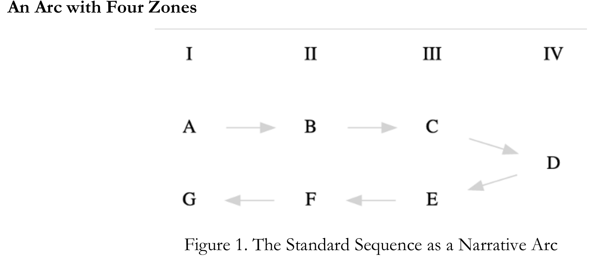
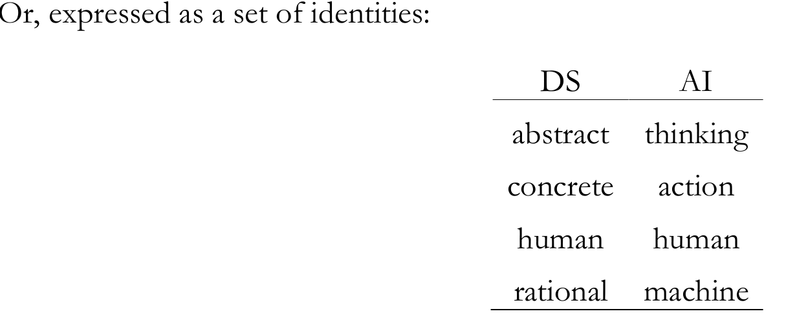

Evidence-grounded
Each sample stores evidence pages, absolute and relative bounding boxes, region type, category, and document id.
Dataset / Project Page
SciEGQA targets a practical but under-explored setting: answering questions on scientific papers while explicitly grounding each answer in the visual evidence regions that support it. Each sample pairs the query and answer with evidence pages, semantic-region bounding boxes, document metadata, and multiple converted views for answer generation and grounding evaluation.
1,623
Benchmark QA pairs
30,780
Training QA pairs
8
arXiv categories
3
Task types
Paper Preview

Benchmark
80 papers / 1,941 pages
Training Set
3,671 papers / 42,380 pages
Annotation
12 annotators + 24 domain experts
Protocol
Answer + bbox grounding
Overview
Existing document QA datasets usually fall into three buckets: page-level QA without precise grounding, component-focused QA on isolated charts or tables, or token-level supervision that is precise but often too fragmented to preserve semantic completeness. SciEGQA is designed to close that gap.
The dataset keeps the question answering setup close to realistic scientific document understanding while attaching semantic evidence regions as bounding boxes. This makes it possible to evaluate both whether a model answers correctly and whether it actually found the right visual support.
Each sample stores evidence pages, absolute and relative bounding boxes, region type, category, and document id.
Page, crop, bbox prediction, and predicted-crop variants support both grounding and answer-generation experiments.
The repository includes answer judging, IoU metrics, local generation, API generation, and training-set construction.

SciEGQA is positioned between coarse page-level QA and overly fragmented token-level grounding by annotating semantically complete evidence regions.
At A Glance
A fine-grained benchmark built from 80 arXiv papers with manual semantic-region annotations for rigorous evaluation of scientific document understanding and evidence grounding.
A large-scale training resource constructed through a PDF-to-region-to-QA pipeline, designed for scalable model training and extensible dataset generation.
The repository includes raw benchmark examples and converted ShareGPT-style multimodal data compatible with LlamaFactory-oriented workflows.
{
"query": "...",
"answer": "...",
"evidence_page": [4],
"bbox": [[[281, 2228, 1890, 2941]]],
"rel_bbox": [[[0.110196, 0.675152, 0.741176, 0.891212]]],
"subimg_type": [["image"]],
"doc_name": "2311.07631",
"category": "cs"
}
The project combines a manual benchmark annotation pipeline with an automatic training-set construction pipeline built from PDF rendering, segmentation, filtering, multimodal judging, and QA generation.
Construction
12 annotators and 24 domain experts manually mark semantically complete text, figure, and table regions.
Each paper is annotated independently, and low-IoU disagreements are reviewed to stabilize evidence quality.
PDFs are rendered at 300 dpi, segmented with SAM-based region proposals, filtered, grouped, judged, and converted into QA pairs.
Local generation, API generation, bbox IoU, and answer correctness evaluation are already wired into the codebase.
Task Design
Single Page Single Region
Localized reasoning from one semantic evidence region on one page.
Single Page Multi Regions
Reasoning across multiple semantically related regions within the same page.
Multi Pages Multi Regions
Cross-page evidence integration over multiple regions, with the highest reasoning complexity.
Examples

In the figure, which letter uniquely receives two arrows, and from which letters do they come?
Answer: D; from C and E.

The same QA pair is converted into a focused crop so the model can reason on the supporting region alone.
Answer: D; from C and E.
Locate the region or regions needed to answer the question. Return only JSON grouped by page.
[[[110.196078, 675.151515,
741.176471, 891.212121]]]
Use model-predicted boxes to crop the evidence region and then answer from the recovered region.
Answer: D; from C and E.

In the identities table, what AI entry corresponds to the DS term "rational"?
Answer: machine
For rows with focus "human", list each area and its first-listed topic in table order.
Answer: design - ontologies; value - ethics

Region-only supervision isolates the evidence and removes irrelevant page context.
Statistics
Benchmark papers are evenly sampled with 10 papers per category. The training set scales unevenly across eight domains.
Local generation and API-based multimodal inference are both supported.
IoU evaluation supports bbox localization quality assessment.
Answer correctness judging is included alongside grounding evaluation.
Automatic training-set construction is available from raw scientific PDFs.

The paper reports dataset statistics over category-modality combinations, question and answer lengths, spatial evidence locations, and evidence type distributions for both benchmark and training data.
Paper
The paper frames SciEGQA as a missing middle ground in DocVQA: it preserves full-page scientific document reasoning while adding semantic-region evidence boxes that are complete enough to remain meaningful and precise enough to evaluate grounding. It also formalizes benchmark and training-set construction as two coordinated parts of one dataset ecosystem.
Question answering on scientific documents with explicit evidence pages and semantic-region bounding boxes.
1,623 benchmark QA pairs plus 30,780 automatically generated training QA pairs from 3,671 papers.
SPSR, SPMR, and MPMR tasks cover localized, multi-region, and cross-page evidence integration.
Answer correctness and grounding quality can be evaluated together, rather than treating them as separate tasks.
Resources
Code, scripts, metrics, data conversion, local/API generation, and training-set construction.
The benchmark release for evaluation on grounded QA over scientific papers.
The large-scale training resource derived from the automatic PDF-to-grounded-QA pipeline.
The project page bundles your ACM-style SciEGQA paper PDF for direct reading and sharing.